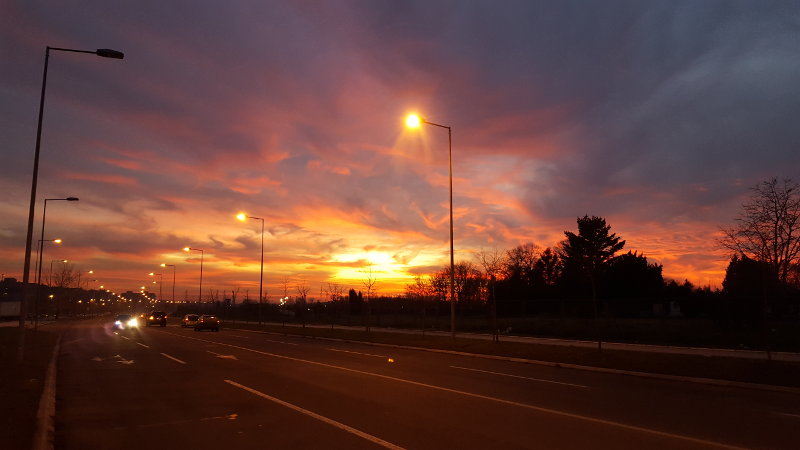

Osnova svakog web sajta je njegov sadržaj.
Kao što kažu - "Content is the king".
Međutim, čist sadržaj, bez ikakvog truda uloženog u izgled sajta i korisničko iskustvo,
će biti čist promašaj. Ako želimo da budemo kompletan autor web sajta, postoje neke
veštine kojima treba da ovladamo čak i pre nego što počnemo da učimo tehnologiju:
Ove veštine predstavljaju dodirne tačke za inače često suprotstavljene aspekte web sajtova - informativnosti i atraktivnosti, odnsono aktivnosti kreiranja sadržaja i dizajna.
Web sajtove danas kreiramo pomoću 3 tehnologije, koje se međusobno kombinuju.
HTML (HyperText Markup Language) je tehnologija kojom definišemo sadržaj web stranica. Ona ne služi za formatiranje već da jasno definišemo šta-je-šta u našem dokumentu. HTML je tekstualni dokument koji je lako napraviti, a zasniva se na uvođenju "oznaka" koje definišu HTML elemente.
Sa druge strane CSS (Cascade StyleSheets) služi za formatiranje, odnosno definisanje izgleda HTML elemenata. Zbog toga je pogrešno reći npr. da element "mark" predstavlja tekst sa žutom pozadinom - boju pozadine možemo lako promeniti u CSS-u, pa čak učiniti i da ona uopšte ne bude obojena.

Pomoću JavaScripta možemo isprogramirati šta se dešava na našoj web stranici. To mogu biti jednostavne animacije, elementi korisničkog interfejsa (npr. dugmići ili meniji), ali i prave-pravcate web aplikacije.